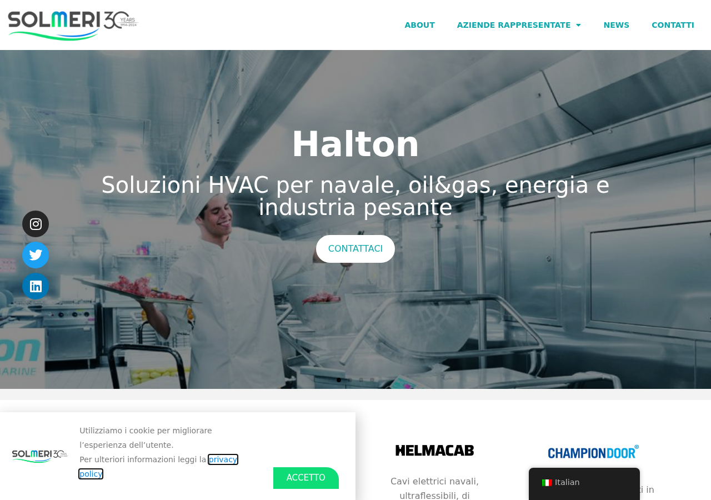
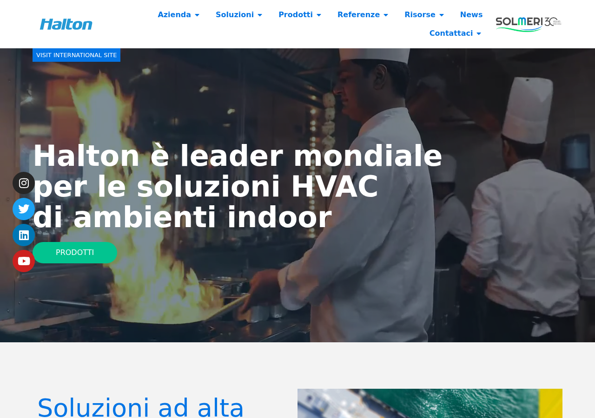
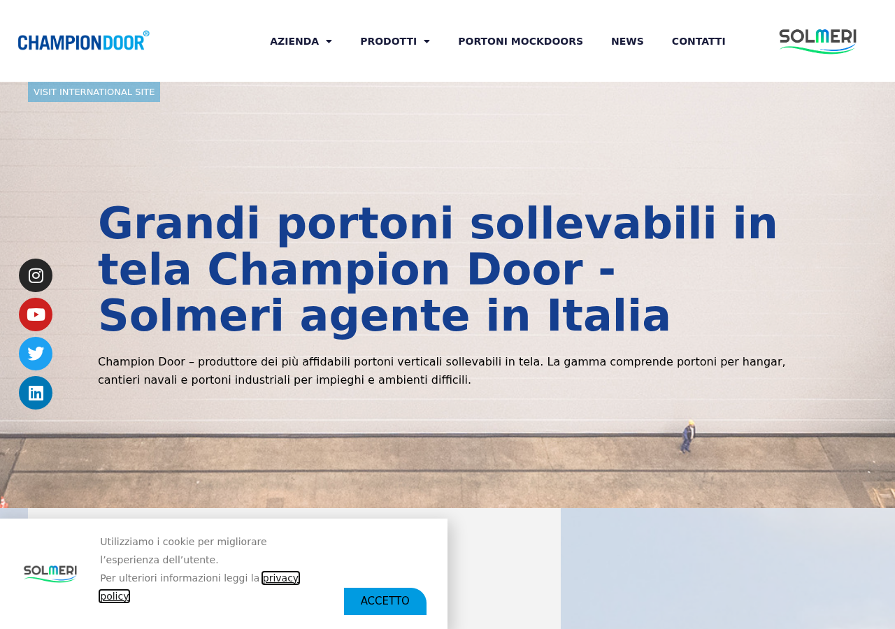
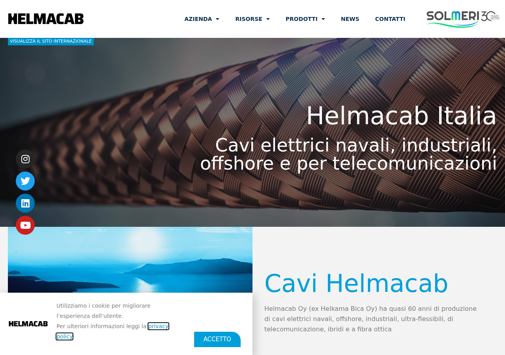

I 5 siti WordPress di Solmeri sono stati trasferiti dal vecchio server Cloudways al nuovo server Hetzner. Tutti si aprono correttamente e mostrano i contenuti giusti. Un'estensione su un sito (HVAC) ha avuto bisogno di una correzione per la nuova versione di PHP. Le prestazioni andranno ottimizzate con la cache, ma il trasferimento in sé è andato a buon fine.
La pagina principale di Solmeri si apre correttamente: tutti i contenuti, le immagini e il menu di navigazione funzionano. Tempo di caricamento nella norma.

Il sito Blastman si carica senza problemi. Immagini dei robot industriali, testi e impaginazione sono tutti al loro posto.
Il sito si apre correttamente dopo aver disattivato un'estensione (Code Snippets) che non era compatibile con la versione più recente di PHP sul nuovo server. Il contenuto e l'aspetto visivo sono intatti. L'estensione andrà aggiornata prima di riattivare gli snippet personalizzati.

Champion Door Italia funziona perfettamente. Le pagine dei portoni, le gallerie fotografiche e i moduli di contatto sono tutti raggiungibili.

Il sito Helmacab per i cavi elettrici si carica senza problemi. Menu, contenuti e immagini tutti presenti e corretti.

| Parametro | Vecchio server | Nuovo server |
|---|---|---|
| Provider | Cloudways (DigitalOcean) | Hetzner Cloud |
| IP | 64.227.112.206 | 46.225.78.132 |
| RAM | 2 GB | 16 GB |
| CPU | 1 vCPU | 8 vCPU |
| Disco | 50 GB | 160 GB NVMe |
| PHP | 7.4 (EOL) | 8.3.30 |
| MySQL | MariaDB | MySQL 8.0.45 |
| Management | Cloudways | Laravel Forge |
| Costo | $24/mese | €8.99/mese (~$10) |
| Location | Amsterdam | Norimberga |
| Forge Server ID | — | 1182168 |
| Hetzner Server ID | — | 124962996 |
| Sito | HTTP | TTFB | Caricamento | Note |
|---|---|---|---|---|
| solmeri.com | 200 | 1480 ms | 2112 ms | OK |
| blastmanitalia.com | 200 | 1939 ms | 2582 ms | OK |
| hvac-solmeri.com | 200 | 2119 ms | 2636 ms | Code Snippets disabilitato |
| portonigiganti-solmeri.com | 200 | 2369 ms | 2939 ms | OK |
| cavi-solmeri.com | 200 | 2826 ms | 2826 ms | OK |
TTFB alto perché nessuna cache attiva (FastCGI, Redis Object Cache, NitroPack). Atteso miglioramento 5-10x con caching.
| Dominio reale | Temporaneo | Database | Forge Site ID |
|---|---|---|---|
| solmeri.com | 26.solmeri.com | solmeri_main | 3101553 |
| blastmanitalia.com | blastman26.solmeri.com | solmeri_blastman | 3101554 |
| hvac-solmeri.com | hvac26.solmeri.com | solmeri_hvac | 3101555 |
| portonigiganti-solmeri.com | portoni26.solmeri.com | solmeri_portoni | 3101556 |
| cavi-solmeri.com | cavi26.solmeri.com | solmeri_cavi | 3101557 |